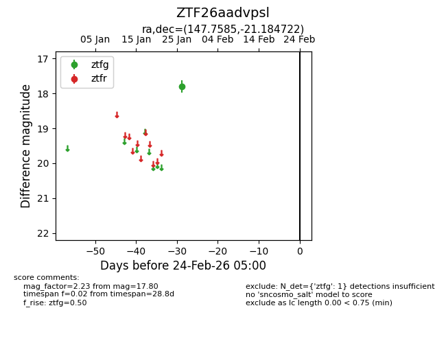
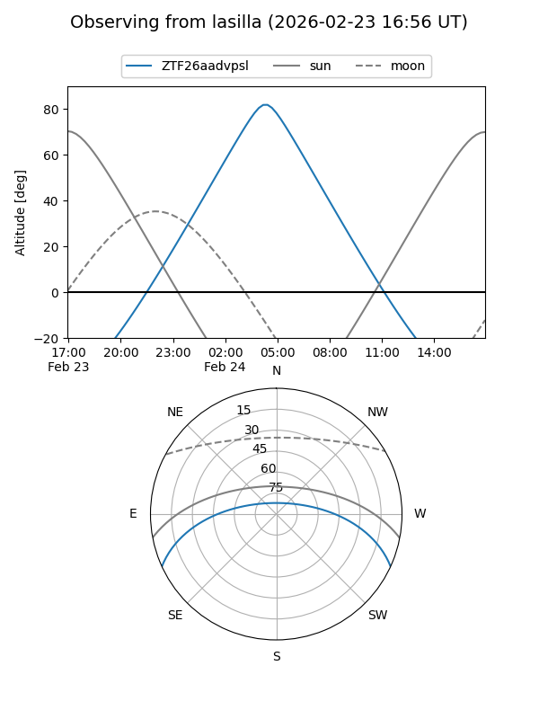
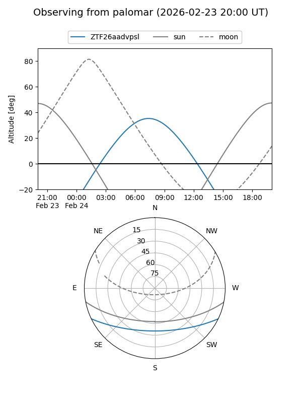

ZTF26aadvpsl
Target ZTF26aadvpsl at 2026-01-28 10:01
Aliases and brokers:
FINK: link
Lasair: link
ALeRCE: link
alt names
ZTF26aadvpsl (ztf,fink_ztf)
Coordinates:
equatorial (ra, dec) = 147.7585,-21.18472
equatorial (HMS+DMS) = 09:51:02.03,-21:11:05.00
galactic (l, b) = (256.2008,+24.89587)
Flags:
Photometry:
last ztfg=17.80
1 ztfg detections
Lightcurve

Visibility


Additional plots